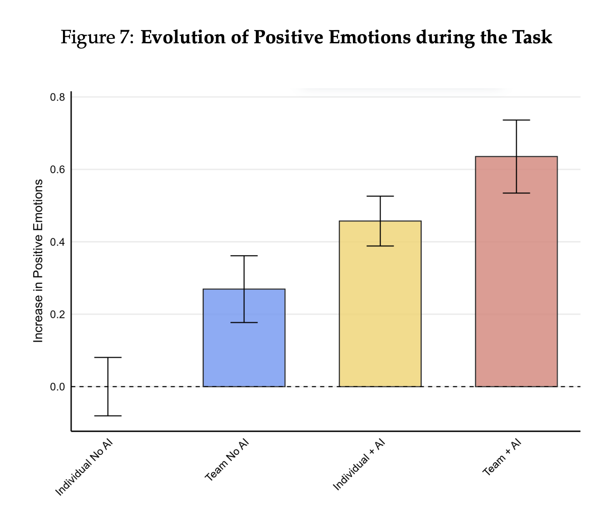
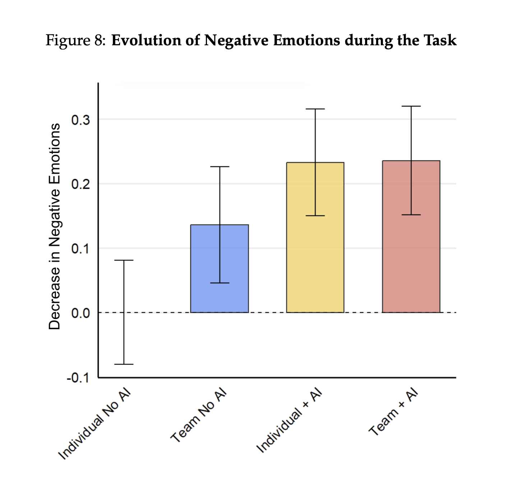

The cybernetic teammate
One of our observations at Subtle is that, enabled by LLMs, "individuals will increasingly outperform teams." A new paper from HBS, Wharton, and Proctor & Gamble (P&G) tested this idea in practice.
Researchers worked with 776 employees at P&G, randomly assigning employees to (a) work with or without AI (specifically, GPT-4) and (b) work alone or with a team.
Here's a summary of their findings, which affirm our own hypothesis:
Our findings show that AI replicates many of the benefits of human collaboration, acting as a "cybernetic teammate." Individuals with AI produce solutions at a quality level comparable to two-person teams, indicating that AI can indeed stand in for certain collaborative functions. Digging deeper, the adoption of AI also broadens the user's reach in areas outside their core expertise. Workers without deep product development experience, for example, can leverage AI's suggestions to bridge gaps in knowledge or domain understanding, effectively replicating the knowledge integration typically achieved through human collaboration. This has the potential to diminish functional boundaries, democratizing expertise within teams and organizations. Moreover, professionals reported more positive emotions and fewer negative emotions when engaging with AI compared to working alone, matching the emotional benefits traditionally associated with human teamwork.... Overall, our findings indicate that adopting AI in knowledge work involves more than simply adding another tool. By enhancing performance, bridging functional expertise, and reshaping collaboration patterns, GenAI prompts a rethinking of how organizations structure teams and individual roles.
The performance boost is not surprising, but it was intriguing that the researchers explored the emotional aspect of collaborating with AI. Some more specifics on that finding:
Finally, we find that AI integration leads to enhanced positive emotional experiences. Figures 7 and 8 present emotional responses across groups, illustrating that participants using AI reported significantly higher levels of positive emotions (excitement, energy, and enthusiasm) and lower levels of negative emotions (anxiety and frustration).
Specifically, working with AI gives you a stronger emotional benefit (in both positive and negative valence) than working with a team.


While negative emotions vanished at the same rate across AI collaborators and human collaborators, the remaining gap was in positive emotions, which came from working with both AI and a team.
They also found that people working outside their domain of expertise got a significant gain in performance in that area using AI:
The results are particularly noteworthy for non-core-job employees. Without AI, non-corejob employees working alone performed relatively poorly. Even when working in teams, noncore-job employees without AI showed only modest improvements in performance. However, when given access to AI, non-core-job employees working alone achieved performance levels comparable to teams with at least one core-job employee. This suggests that AI can effectively substitute for the expertise and guidance typically provided by team members that are familiar with the task at hand. This pattern demonstrates AI's potential to democratize expertise within organizations, extending prior work on individual knowledge workers (e.g., (Brynjolfsson et al., 2023; Dell'Acqua et al., 2023b)). AI allows less experienced employees to achieve performance levels that previously required either direct collaboration or supervision by colleagues with more task-related experience.
This is a big reason one-person companies led by generalists will succeed. Historically, firms assembled teams of functional experts led by general(ist) managers. Now, one person companies can be run by generalists who consult AI for on-demand expertise in any functional area.